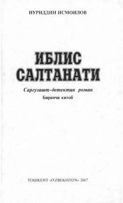

ISJinoyat olami va qimorbozlar hayotidan hikoya qiluvchi qiziqarli detektiv roman.
Ushbu asar jinoyat olami va qimorbozlar hayotiga bag'ishlangan sarguzasht-detektiv romandir. Asar bosh qahramoni Ikromning qimor o'yinidagi muvaffaqiyati va uning jinoiy guruhlar bilan bog'liq murakkab munosabatlari tasvirlanadi.